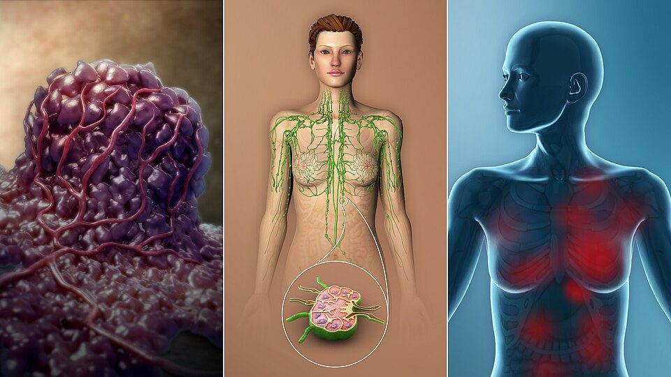

Información divulgativa. No sustituye la valoración de tu equipo médico ni sirve para decidir un tratamiento.


Dos conceptos distintos
- El estadio describe la extensión del cáncer en el cuerpo: el tamaño del tumor, si afecta a los ganglios y si se ha extendido a otros órganos.
- El grado describe el aspecto de las células al microscopio: cuanto más distintas son de las normales, mayor es el grado y, en general, más rápido crecen.
Un tumor puede ser pequeño y estar localizado (estadio bajo) pero tener un grado alto, o al revés. Los dos datos ayudan a decidir el tratamiento.
El sistema TNM
Es el sistema de estadificación más usado en los tumores sólidos, elaborado por la AJCC y la UICC:
- T (tumor): tamaño y extensión local, de T1 a T4. Tis es carcinoma in situ.
- N (ganglios, del inglés nodes): de N0 (sin ganglios afectados) a N3.
- M (metástasis): M0 (sin metástasis a distancia) o M1.
La combinación se agrupa en estadios del 0 al IV:
| Estadio | Significado general |
|---|---|
| 0 | Carcinoma in situ: no ha invadido |
| I | Tumor pequeño y localizado |
| II-III | Tumor mayor o con ganglios afectados en la región |
| IV | Metástasis en otros órganos |
Una «c» delante (cTNM) indica estadio clínico, por exploración e imagen; una «p» (pTNM), estadio patológico, tras analizar la pieza quirúrgica; una «y» (ypTNM), después de un tratamiento previo.
No todos los cánceres usan TNM
- Las leucemias no se estadifican así, porque están en la sangre desde el principio; se clasifican por sus alteraciones genéticas y el riesgo.
- Los linfomas usan la clasificación de Lugano (estadios I a IV según las regiones de ganglios afectadas).
- El mieloma usa el sistema R-ISS.
- Los tumores cerebrales no se estadifican: importan el tipo, el grado y el perfil molecular.
- Los tumores ginecológicos usan además el sistema FIGO.
El grado
Se expresa a menudo de 1 a 3 (bien, moderadamente o poco diferenciado). Algunos tumores tienen sistemas propios: Gleason e ISUP en la próstata, Nottingham en la mama, la clasificación de la OMS de 1 a 4 en los tumores cerebrales.
Qué no significa
Un estadio avanzado no quiere decir que no haya tratamiento. Muchos cánceres en estadio IV se controlan durante años, y algunos, como los de testículo o ciertos linfomas, se curan con frecuencia.
Ver también: Biopsia y anatomía patológica, ¿Qué significa la supervivencia a cinco años?.
Fuentes
- Amin MB, et al (eds.). AJCC Cancer Staging Manual. 8.ª ed. Springer; 2017.
- NCI. Estadificación del cáncer. cancer.gov/espanol/cancer/diagnostico-estadificacion/estadificacion
- UICC. TNM Classification of Malignant Tumours. uicc.org